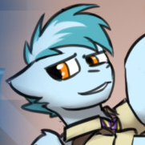

Contents
(Top)Concorde
Born17 December 2017 (age 27), Equestria
StatusActive
Nationality Equestria
Equestria
EquestriaSelectionEASA Astronaut Group 42
MissionsStardust 21
Concorde (astronaut)
From Kwikepedia, the free encyclopedia
For other uses, see Concorde (disambiguation)
Concorde (born December 17, 2017) is an EASA astronaut.